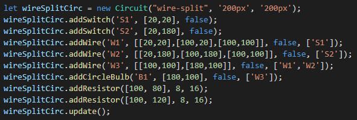

Circuit Engine Demonstration
I made this mainly as a way to show off logic circuits to help explain how computers work.
However, it turned out to be great practice for Object Oriented Programming. This idea began when I started experimenting
with using SVG and canvas in HTML to show off circuits. I dabbled a little but found that it took a silly
amount of time to get anything worthwhile done, and the plans I had for showing off larger circuits didn't seem possible.
To combat this and the repetition of code, I decided to make an engine that would allow each component of the circuit to be defined by a single
line of code. The engine handles both the logic of the component in the circuit and the rendering of the component to the outcome canvas.
I plan to write up a full documentation soon, and I still have many planned additions and tweaks. For now though, here is a demonstration.

In this example, we can see the circuit object 'wire-split' is created. This has a name, a width, and a height.
There is an optional fourth argument for colour as well. The user must also create a div in the html part with an
id with the same name as the circuit object. This div is where the output canvas will go.
We then add components to the circuit object using methods of the circuit.
For most of these methods, the arguments follow the pattern (name, location, begin on/off, dependencies).
Some of the component objects have extra features, like how wires will go point to point for each location in the array.
Resistors are a decorator with no internal logic, so all of their argument are for rendering.
Dependencies are how the internal logic of the circuit is handled. For most component types, if a dependency of the
component is turned on, the component will also be turned on. update() does the first internal logic check and sets
each component to what it should be before the first render.
After the internal logic is sorted out, the circuit is then rendered to a canvas object whose size is determined
by the arguments of the circuit object. The final canvas includes event handlers allowing certain objects
to be clicked on, such as the square switches in these examples.
Here are some more examples: